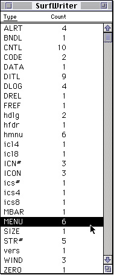

Legacy Document
Important: The information in this document is obsolete and should not be used for new development.
Important: The information in this document is obsolete and should not be used for new development.


Creating a Resource
You typically define the user interface elements of your application, such as menus, windows, dialog boxes, and controls, by specifying descriptions of these elements in resources. You can then use Menu Manager, Window Manager, Dialog Manager, or Control Manager routines to create these elements--based on their resource descriptions--as needed. You can create resource descriptions using a resource editor, such as ResEdit, which lets you create the resources in a visual manner; or you can provide a textual, formal description of resources in a file and then use a resource compiler, such as Rez, to compile the description into a resource. Figure 1-5 shows the window ResEdit displays for the SurfWriter application. This window lists all of the resources in the resource fork of the SurfWriter application.Figure 1-5 The ResEdit window for the SurfWriter application
 You can use ResEdit to examine any of your application's resources. For example, to view your application's
'MENU'resources, double-click that resource in the ResEdit window. Figure 1-6 shows how ResEdit displays the menus of the SurfWriter application.Figure 1-6 The menus of the SurfWriter application
Listing 1-1 shows the definition of SurfWriter's Apple menu in Rez input format.
Listing 1-1 A menu in Rez input format
#define mApple 128 resource 'MENU' (mApple, preload) { /*resource ID, preload resource*/ mApple, /*menu ID*/ textMenuProc, /*uses standard menu definition */ /* procedure*/ 0b1111111111111111111111111111101, /*enable About item, */ /* disable divider, */ /* enable all other items*/ enabled, /*enable menu title*/ apple, /*menu title*/ { /*first menu item*/ "About SurfWriter...", /*text of menu item*/ noicon, nokey, nomark, plain; /*item characteristics*/ /*second menu item*/ "-", /*item text (divider)*/ noicon, nokey, nomark, plain /*item characteristics*/ } };Your application can also create, modify, and save resources as needed using various Resource Manager routines.You can store your application-specific resources in the application file itself. You need not add resources to your application after it is created. Instead, store any document-specific resources in the relevant document and store user preferences in a preferences file in the Preferences folder of the System Folder.
To retrieve resources from your application's resource fork, you usually use other managers (such as the Menu Manager or Window Manager). To retrieve resources other than menus, windows, dialog boxes, or controls, you usually use Resource Manager routines.
To retrieve a resource from a document file or a preferences file, your application needs to open the resource fork of the file and then use Resource Manager routines to retrieve any resources in the file. The section that follows, "Getting a Resource," describes how the Resource Manager returns a handle to a resource at your application's request and how to modify a purgeable resource safely. The sections "Opening a Resource Fork" and "Reading and Manipulating Resources" beginning on page 1-18 and page 1-24, respectively, describe in detail how to use Resource Manager routines to open and read resources.